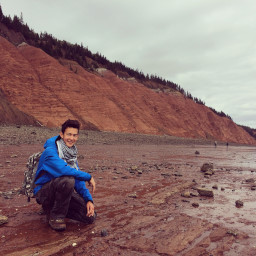

HomeAboutContact
About
---------------
<div id="profile_badges">
<table id="vcard_badge"><tr>
<td class="vcard-img">[][24]</td>
<td>
<div class="vcard">
<ul class="vcard-details">
<li class="vcard-detail" itemprop="worksFor"><span class="octicon octicon-organization"></span>AutoHotkey Foundation</li>
<li class="vcard-detail" itemprop="homeLocation"><span class="octicon octicon-location"></span>Canada, ON, Ottawa</li>
<li class="vcard-detail" itemprop="school"><span class="octicon octicon-mortar-board"></span>Carleton University</time></li>
<li class="vcard-detail" itemprop="email"><span class="octicon octicon-mail"></span><a class="email" href="mailto:joedf@ahkscript.org">joedf@ahkscript.org</a></li>
<li class="vcard-detail" itemprop="url"><span class="octicon octicon-link"></span><a href="https://autohotkey.com/joedf" class="url" rel="nofollow me">autohotkey.com/joedf</a></li>
</ul>
</div>
</td>
</tr></table>
<div id="about_widgets">
<iframe id="pocket_widget" src="https://joedf.github.io/pocket.widget/src/web/output.html" style="border:0;height:294px;width:280px;overflow:hidden;" frameBorder="0"></iframe>
<iframe id="github_badge" src="https://joedf.github.io/github-badge-2/src/badge.html" style="border:0;height:134px;width:200px;overflow:hidden;" frameBorder="0"></iframe>
</div>
</div>
Joe DF
------------
I am a programmer who :
- loves the [C programming language][2] and the [AutoHotkey scripting language][8].
- favours the [MIT License][3].
- has a minimalistic website, because I like to be straight forward and lazy.
- knows many programming languages such as C/C++, C#, Python, PHP, Javascript, AHK, Lua, Rust, etc.
- is an avid Web Developer.
- identifies loosely as a [Social Democrat][4], not [Democratic Socialist][29] or [Communist][5].
- is a Manager at the [AutoHotkey Foundation LLC][9].
- has a [LinkedIn][23] profile.
- built his first custom gaming PC 🖥️🎮 on June 30th, 2018.
- likes all kinds of music, but mostly listens to things like Lemaitre 🌌, Kavinsky 🎧, Daft Punk 🤖, or deadmau5 🐁.
- graduated in 2019 with a B.Sc. (Hons.) in [Earth Sciences][12] at [Carleton University][13].
- is currently an [Industrial PhD][30] candidate in [Materials Science and Engineering][31] at [McMaster University][32], particularly on Correlative Microscopy.
I have a passion for philosophy and design. I discuss matters about ethics, theology, epistemology and metaphysics. I am an agnostic in the following sense :
> Agnosticism - the belief that the existence or non-existence of deities or God is currently unknown or unknowable and cannot be proven. A weaker form of this might be defined as simply a lack of certainty about gods' existence or nonexistence.
> Source : [Wikipedia/Philosophy_of_religion][6]
### Some of my written works*
- **"Philosophical Ideas"** : Some of my ideas and notes, some in French, some in English. [[View]](philo.html)
- **"La déforestation au Québec"** : My final paper for Philosophy 103 ethics ([CEGEP/DEC][16]). (French) [[View]][14]
- **"Les effets d’une bombe nucléaire"** : Written as my final group paper for my college degree ([CEGEP/DEC][16]) in natural sciences. (French/English) [[View]][15]
- **"The Science and Mitigation Efforts of the Tohoku Earthquake"** : Written as my final paper for the ENSC2001A university course (Carleton University). (English) [[View]][20]
- **"Relative Star Visibility in the Ottawa-Gatineau Region"** : My final project for the GEOM2007C university course (Carleton University). (English) [[View Report]][18] [[View Map]][19]
- **"Rock Project Assignment"** : for the ERTH2104A (Igneous systems, ...) university course (Carleton University). (English) [[View Report]][21]
- **"Brachiopods and Bivalves: A theory on the morphology"** : for the ERTH2312A (Paleontology) university course (Carleton University). (English) [[View Report]][22]
- **"Bushveld Igneous Complex"** : A Wikipedia article written ([~85 % authorship as of June 8th, 2018][26]) for the ERTH4303A (Resources of the Earth) university course (Carleton University). (English) [[View Article]][25]
- **"Application of Atlas 5 Large-area and Nano-scale Imaging to Purported Volcanic Products of the El Laco Volcano, Chile"** : my B.Sc.H. thesis (that could be improved) in conjunction with Fibics Incorporated and Carleton University. (English) [[View Paper]][27] [[View Poster]][28]
<sub>*note: listed in written chronological order. All rights reserved.</sub>
### Some history...
I am actually a [*Huguenot*][17] (by decent). My mother is from Shanghai. My father is from Montreal with both German parents. I am therefore half Chinese, half German. I was born in Ottawa, Canada in 1995.
I speak ~five languages :
- French
- English
- German
- Mandarin
- Spanish (learning, personal interest)
- Russian (still learning...)
My first instrument was supposed to be the violin. My teacher made me promise never to give up no matter how difficult things would be. I promised. I did learn some basics, but my teacher was the one ending up not holding his end of our agreement. I ended up learning piano. It was enjoyable. My sister was significantly more advanced than me. **[Many years later, parents divorced, etc]** I started to learn guitar. I have been *playing* ever since. I first started back in 2009.
It is in my belief that one must be open-minded in order to think [*clearly*], to be authentic and to be able to progress [*in all*]. Nothing is *simply* "correct", nor is anything *simply* "wrong". On the expression of one's perception/belief on a subject, the *automatic* reaction of rejection or denial without consent of the **full** expression is a sign of *ignorance*. In other words, I am open to all opinions. I welcome you to express yourself **fully** when necessary.
Don't be shy to [contact me][7]. Additionally, you may view my [LinkedIn profile][10] and [GitHub profile][11].
[1]: assets/img/joedf2_x256.jpg
[2]: https://en.wikipedia.org/wiki/C_%28programming_language%29
[3]: http://opensource.org/licenses/MIT
[4]: https://en.wikipedia.org/wiki/Social_democracy
[5]: https://en.wikipedia.org/wiki/Communism
[6]: https://en.wikipedia.org/wiki/Philosophy_of_religion?oldid=667636032#Existence_of_God
[7]: contact.html
[8]: https://autohotkey.com/
[9]: https://autohotkey.com/foundation
[10]: https://www.linkedin.com/in/joedf
[11]: https://github.com/joedf
[12]: http://earthsci.carleton.ca
[13]: https://carleton.ca
[14]: assets/files/deforestation_qc.pdf
[15]: assets/files/nuke_fx.pdf
[16]: http://www.cegepoutaouais.qc.ca
[17]: https://en.wikipedia.org/wiki/Huguenot
[18]: assets/files/geom2007c_doc.pdf
[19]: assets/files/geom2007c_map.pdf
[20]: assets/files/tohoku.pdf
[21]: assets/files/erth2104_report.pdf
[22]: assets/files/brachiopoda_and_bivalvia.pdf
[23]: https://www.linkedin.com/in/joedf
[24]: assets/img/joedf2.jpg
[25]: https://en.wikipedia.org/wiki/Bushveld_Igneous_Complex
[26]: https://xtools.wmflabs.org/articleinfo/en.wikipedia.org/Bushveld%20Igneous%20Complex
[27]: assets/files/bsc_thesis-sq.pdf
[28]: assets/files/bsc_thesis_poster.pdf
[29]: https://en.wikipedia.org/wiki/Democratic_socialism
[30]: https://www.eng.mcmaster.ca/industrial-phd
[31]: https://www.eng.mcmaster.ca/materials
[32]: https://www.mcmaster.ca/